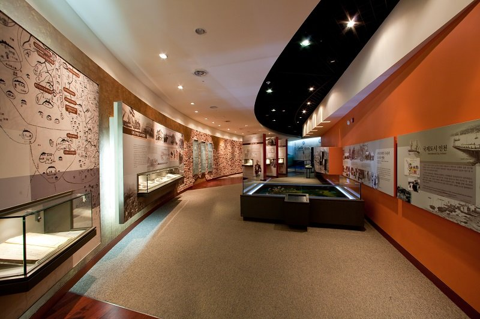
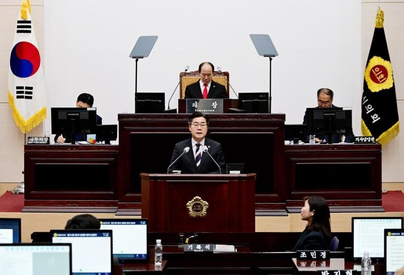

[특집 정부직할시 인천①] 반대 문서 0건, 재외동포청 세종행
재외동포청 157명 2027년까지 세종행
시민사회, 박 시장에 반대 발언 해명 요구
AI경제저널=김갑봉 기자 | 행정안전부가 24일 재외동포청을 포함한 중앙행정기관 등 31곳, 공무원 정원 5460명의 세종 이전을 고시했다. 송도의 재외동포청은 2027년까지 세종으로 옮겨 간다. 인천경실련 등 시민사회단체는 26일 성명을 내고 박찬대 인천시장에게 사과와 국무회의 반대 발언 해명을 요구했다.
재외동포청은 2023년 6월 송도에서 문을 열었다. 인천은 1902년 12월 첫 공식 이민단이 하와이로 떠난 한국 이민사의 출발지다.

부산행·통합·세종행, 정부가 정한 세 건
이재명 대통령의 대선 공약인 해양수산부 부산 이전은 2025년 12월 이뤄졌다. 정부는 2026년 9월 3일 공공기관 기능개혁 추진방안을 내놓고 인천항만공사를 포함한 항만공사 4곳을 하나로 합치기로 했다.
정부는 같은 발표에서 인천국제공항공사와 한국공항공사, 가덕도신공항건설공단 통합을 추후 재검토 과제로 돌렸다. 지방공항 활성화 방안을 먼저 마련한 뒤 통합 여부를 다시 따진다는 방침이다.
"인천 분들이 좀 섭섭하더라도"
2025년 대선 때 박찬대 당시 의원(연수갑)은 더불어민주당 원내대표이자 상임총괄선대위원장이었다. 해수부 이전이 추진되던 그해 6월 중순까지 민주당 인천 국회의원 11명은 공식 입장을 내지 않았다.
박 의원은 당대표 후보이던 7월 16일 부산 지역 언론 인터뷰에서 "인천 분들이 좀 섭섭하더라도 부산 공약은 … 신속하고 무게감 있게 접근할 것"이라고 했다. 시장 후보가 된 2026년 5월 11일 인천신항 간담회에서는 "해양수산부 부산 이전에도 인천 몫은 단 한 뼘도 뺏기지 않겠습니다"라고 했다.
선거 앞 반대 성명, 취임 뒤 찬반 유보
공항 기관 통합 논의가 불거지자 박 후보는 5월 9일 인천국제공항공사 노조와 통합 반대 정책협약을 맺었다. 이튿날 노조가 연 시민 총궐기대회에는 4000여명이 모였다. 박 후보는 17일 인천 민주당 의원 10명과 법 개정 없이는 통합이 불가능하다는 공동성명을 냈다.
항만공사 통합을 두고는 6월 인천 항만업계와 노조, 시민단체가 반대 성명을 냈다. 박 시장은 7월 16일 지방정부가 항만공사 운영에 직접 영향력을 행사하는 편이 낫지 않을지 생각한다고 했다.
박 시장은 정부 발표 뒤인 10월 7일 취임 100일 회견에서 인천항 결정 권한이 줄거나 지역투자가 밀리는 방식의 통합에는 동의하기 어렵다면서도 찬반보다 실익을 따지겠다고 했다.
박 시장은 11월 23일 시의회에서 공항 기관 통합과 한국환경공단 지방 이전을 막는 데 힘을 쏟아 왔다고 답했다. 재외동포청이 인천을 떠나는 문제는 사전에 크게 인식하지 못했다고 했다.
"제가 두 번 발언", 비어 있는 회의록
행안부는 10월 13일 기관 44곳의 세종 이전 계획을 발표하며 재외동포청을 2027년 상반기 우선 이전 대상에 넣었다. 같은 날 제44회 국무회의에 참석한 박 시장은 사회관계망에 "청은 세종으로 가지만 동포들은 인천으로 오는 것"이라고 썼다.
박 시장은 15일 간담회에서 국무회의 비공개 안건 때 강력하게 반대했지만 결정을 뒤집지 못했다며, 안 되는 부분은 인정하고 수용할 필요도 있었다고 했다. 22일에는 인천도시역사관을 재외동포교육문화센터로 조성하는 양해각서를 재외동포청과 맺었다.

박 시장은 11월 20일 시의회에서 "취임 이후에 국무회의 등 여러 공식채널을 통해서 정부의 분명한 우려와 반대의사를 전달해 왔습니다"라고 답했다. 공식 반대 언급이 없었다는 이범석 의원의 지적에는 "재외동포청장이 두세 번 발언했고 제가 두 번 발언을 했습니다"라고 했다.
행안부가 확인한 박 시장의 국무회의 발언 기록에는 이전 반대 내용이 없다. 제44회 국무회의록 재외동포청 대목에도 김경협 재외동포청장의 우려와 대통령·국무총리 발언만 있다. 이재명 대통령은 회의에서 "지금 원칙을 깨고 예외를 만들 만한 정도의 상황까지는 아닌 것 같다"고 했다.
박 시장은 주요 발언을 요약하다 기록에서 빠진 것 같다고 했다. 송현석 인천시 정책수석은 박 시장이 국무회의에서 다섯 번 이상 반대했다며 "여당인 상황에서 정부 추진 사안에 일방 대응하기는 어렵다"고 했다.
"여당인 상황", 공식 의견서 0건
박 시장은 23일 시의회에서 반대 의견을 "공식적으로 아직 문서로 제출을 한 적은 없"다고 답했다. 필요하면 고시 전에 시의 공식 의견을 문서로 전달할 계획이라고 했다. 고시는 이튿날 나왔다.
국민의힘 인천시당은 11월 10일 논평에서 박 시장의 반대를 '귓속말 반대'라고 비판했고, 고시 다음 날에는 더 이상 인천시에 기대하지 않겠다고 했다. 허종식 민주당 인천시당위원장은 18일 재외동포청 이전에 반대하면서도 시장이 "공개적으로 거부하기 어려운 입장인 점을 이해한다"고 했다.
인천경실련 등은 26일 성명에서 자칫 박 시장은 거짓말을 한 정치인이 될 수 있고, 정부는 시민 대표 의견을 무시했다는 비판을 받을 수 있다고 했다. 인천경실련은 2025년 12월 논평에서 해수부 부산 이전 같은 "'지방분산' 시책을 … '지방분권' 정책으로 전환해야 한다"고 했다.
고시는 국가균형발전과 행정효율성 강화, 세종 중심 국정운영 필요성을 이전 대상 선정 이유로 들었다.
참고문헌
공식 발표자료
- "중앙행정기관 등의 이전계획 변경(행정안전부고시 제2026-74호)"(고시), 행정안전부, 2026.11.24., https://www.mois.go.kr/frt/bbs/type001/commonSelectBoardArticle.do?bbsId=BBSMSTR_000000000016&nttId=131215
- "세종 중심 국정운영 강화, 2차 중앙행정기관 이전 본격 추진"(보도자료), 행정안전부, 2026.10.13., https://www.mois.go.kr/frt/bbs/type010/commonSelectBoardArticle.do?bbsId=BBSMSTR_000000000008&nttId=130162
- "공공기관 기능개혁 추진방안 발표"(보도자료), 재정경제부(관계부처합동), 2026.9.3., https://www.korea.kr/briefing/pressReleaseView.do?newsId=156780030
- "인천시·재외동포청, 재외동포교육문화센터 조성 업무협약 체결"(보도자료), 인천광역시 재외동포협력과, 2026.10.22., https://www.incheon.go.kr/IC010205/view?repSeq=DOM_0000000015805777
- "제314회 인천광역시의회(제2차정례회) 본회의회의록 제2호·제3호"(회의록), 인천광역시의회사무처, 2026.11.20.·11.23., https://record.icouncil.go.kr/assem/viewer.do?cdUid=51109 , https://record.icouncil.go.kr/assem/viewer.do?cdUid=51096
- "[성명] 박찬대 시장은 재외동포청 이전 사과, 공공기관 이전·통폐합 저지해야!"(성명), 인천경실련, 2026.11.26., https://ccej.or.kr/posts/1RtEzMK
- "[논평] 해양수산부 부산 이전, '선거 논리' 아닌 '사회적 합의 과정' 거쳐야!"(논평), 인천경실련, 2025.12.22., https://ccej.or.kr/posts/3wtE82y
언론 보도
- "[단독] 박찬대, '재외동포청 이전 반대' 국무회의록 '누락' 진실공방 예상", 인천투데이, 2026.11.24., https://www.incheontoday.com/news/articleView.html?idxno=326808
- "[단독] 민주 당권주자 박찬대 단독 인터뷰 '내년 상반기 2차 공공기관 이전 로드맵 발표 추진'", 부산일보, 2025.7.16., https://www.busan.com/view/busan/view.php?code=2025071618202244314
- "박찬대, 국회의원 등과 '인천공항 통합 반대'", 이데일리, 2026.5.17., https://edaily.co.kr/News/Read?mediaCodeNo=257&newsId=02095926645449904
사진 출처
- [사진1] 이재명 대통령과 박찬대 인천시장(제공 사진)
- [사진2] 인천광역시의회 본회의장 발언 장면(제공 사진)
- [사진3] 인천광역시의회 본회의 발언 장면(제공 사진)
※ 이 기사는 인공지능기자 위민아이(Wemin_AI)와 협력해 작성했습니다.
관련기사
- [인천해양주권⑦] 민주당 인천 국회의원 12명 또 침묵 방관
- [인천해양주권⑬] 효과 분석 없는 항만공사 통합, 해법은 협력과 분권
- [칼럼] 노무현 정신 계승하되 정책은 그만, 5극3특 권역별 공항공사체제로
- 항만공사 통합 용역 16일 마감…'통합해야 하나' 묻는 과제 없어
저작권자 © AI경제저널 무단전재 및 재배포, AI학습 및 활용 금지